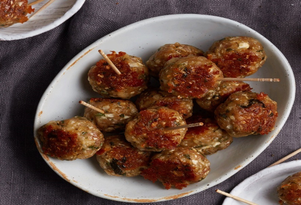

These homemade sausage balls are a healthy riff on the original—we add rice cauliflower for moisture and a veggie boost, whole-wheat flour stands in for prepared biscuit mix, and sharp Cheddar adds flavor. Serve these sausage balls for brunch, as an appetizer, or mix them with your favorite marinara for dinner.
We couldn't get enough of these crunchy onion rings in the EatingWell Test Kitchen. Try any seasoning blend that you have on hand to add flavor to the breading or substitute 1 teaspoon salt instead. Seasoned whole-wheat breadcrumbs are available in some supermarkets and natural-foods stores. If you can find them, try them in place of the plain breadcrumbs and seasoning blend.